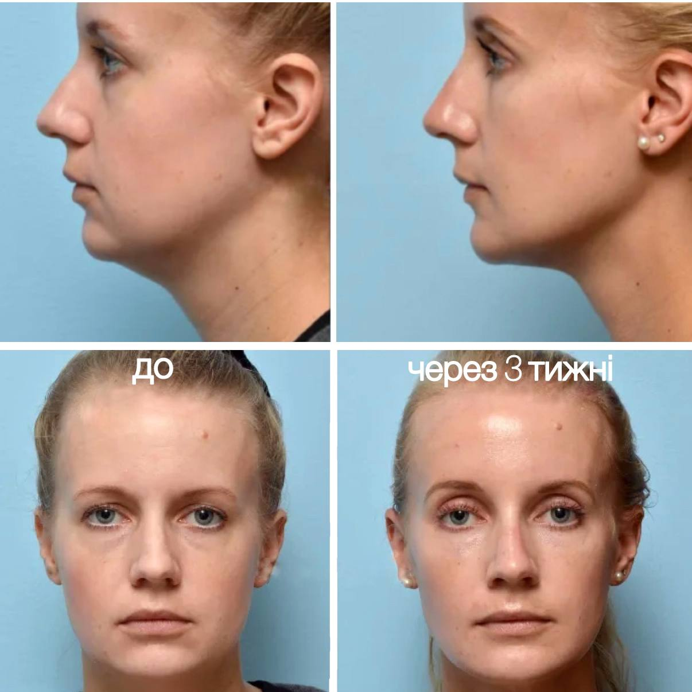
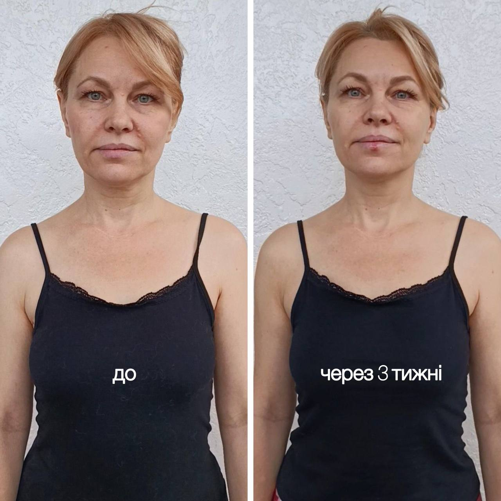

Що ми вже побачили
За ці кілька хвилин ми вже зрозуміли, які саме зміни у вашому тілі заважають вам отримати той результат, якого ви хочете.
-
ми визначили основні проблемні зони
-
побачили, що саме створює навантаження
-
зрозуміли, чому попередні методи не дали стійкого результату
Проблема не в окремій зоні.
Тут діє одна проста схема взаємозв'язку.
"Коли одна ланка працює неправильно — інші змушені компенсувати."
Саме тому більшість методів не працюють довго
Це все дає тимчасове полегшення. Бо вони працюють із симптомом.
А причина залишається.
"Практично всі мої клієнти вже щось пробували."

Що потрібно змінити
саме у вашому випадку:
- мобільність грудного відділу
- положення таза
- робота стоп
- патерн дихання
- розвантаження шиї
- рухливість плечей
Якщо залишити все як є...
Тіло й далі компенсуватиме неправильне навантаження
Напруга накопичуватиметься
Шия перевантажуватиметься ще більше
Тіло буде ставати менш рухливим
Обличчя поступово втрачатиме тонус
Трішки результатів моїх клієнтів

Кейс 1

Кейс 2

Кейс 3

Кейс 4
Гортайте вбік
Ви вже самі побачили.
У вас проблема не в одному м'язі. Не в одному суглобі. Не в одній вправі.
Тому випадкові вправи або масажі не дадуть стабільного результату.
"Саме тому я працюю через комплексну систему відновлення."
Що відбувається далі?
Через що проходить людина
Через 30–60 днів більшість учасників відзначають:
Реальні історії змін
"Раніше шия боліла щовечора. Після 4 тижнів програми я не тільки забула про біль, але й побачила, як змінився овал обличчя. Пішли набряки."
Олена, 42 роки
"Я пробувала тейпи та фейсфітнес, але ефект був тимчасовим. Коли ми вирівняли таз і розкрили грудний відділ — обличчя підтягнулося само собою."
Марія, 38 років
Програма
6 тижнів якісних змін вашого життя
Плечовий пояс та еластичність грудних м'язів
Фундамент, лімфодренаж та дихання
Мобільність хребта та розгиначі
Стабілізація тазу та центр (Core)
Королівська постава — шия та стабілізація голови
Генеральна збірка, закріплення постави та ліфтингу
◆ Формати участі ◆
Оберіть свій формат
Груповий
Комплексна робота з підтримкою
- 6 тижнів (6 модулів)
- 12 групових онлайн зустрічей
- 2 групові сесії питання-відповідь
- Бонус: Гайд по харчуванню "Антинабряк"
Ціна: 350 $
300 $
ціна з консультації
1 на 1
Персональне ведення до результату
- 6 тижнів (6 модулів)
- + доп. модуль по масажу гуаша
- 12 індивідуальних онлайн зустрічей
- 3 індивідуальні сесії питання-відповіді
- Бонуси: Гайд "Антинабряк" + Курс "Здорова шия"
Ціна: 700 $
600 $
ціна з консультації
Незалежно від обраного тарифу:
Особисте ведення. Я особисто веду вас від точки А до точки Б. Без результату я вас не залишу.
Назавжди. Матеріал залишається з вами. В програмі зібрана база, яка даватиме результати протягом всього життя. Ви разово купуєте вирішення проблеми пожиттєво.
Безпека рішення.
Якщо ви регулярно відвідуєте заняття, виконуєте індивідуальний план та ДЗ, але протягом перших 3 тижнів розумієте, що програма вам не підходить — я поверну вам 100% вартості.